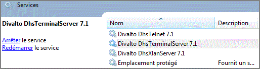
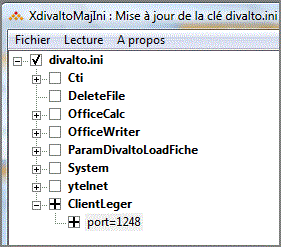
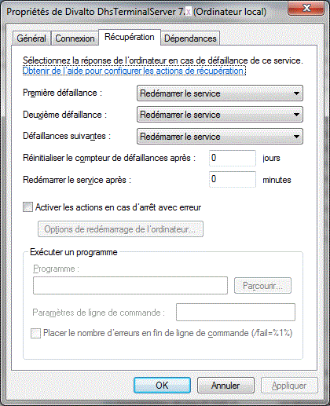

On privilégiera le mode Socket pour des connexions dans un réseau local d’entreprise ou dans le cadre d’un réseau virtuel privé, réseaux pour lesquels l’ouverture d’un port de communication particulier n’est généralement pas un problème. En effet :
Le protocole de communication (TCP/IP) est plus simple que les Services Web.
Il ne nécessite pas la mise en œuvre d’un serveur IIS.
Pour les connexions par sockets TCP/IP, le service DhsTerminalServer doit être démarré sur le serveur d’applications. C’est ce service qui attend les connexions des postes client :

Ce type de connexion nécessite l’ouverture d’un port de communication TCP/IP entre le client et le serveur au niveau des Firewalls. Par défaut, le serveur écoute le port 1246.
Paramétrage du port
Si le port 1246 n’est pas disponible ou ne convient pas, il peut être changé dans la base de registre globale du serveur (HKEY_LOCAL_MACHINE), par l’utilitaire XDivaltoMajini. Le choix de la section de la base de registre à traiter s’effectue à partir du menu « Lecture » de cet utilitaire.

Le port du client doit évidemment être en adéquation avec celui du serveur : le paramétrage du port coté client se trouve dans le profil de connexion.
Redémarrage automatique du service DhsTerminalServer en cas de défaillance
Le gestionnaire des services de Windows permet de spécifier le comportement d'un service en cas de défaillance (onglet Récupération de la boîte des propriétés du service). Les options de redémarrage automatique peuvent être appliquées au service DhsTerminalServer pour autoriser ce dernier à redémarrer s'il s'avère défaillant :
